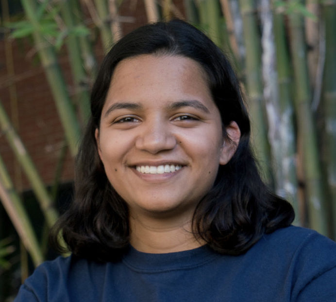
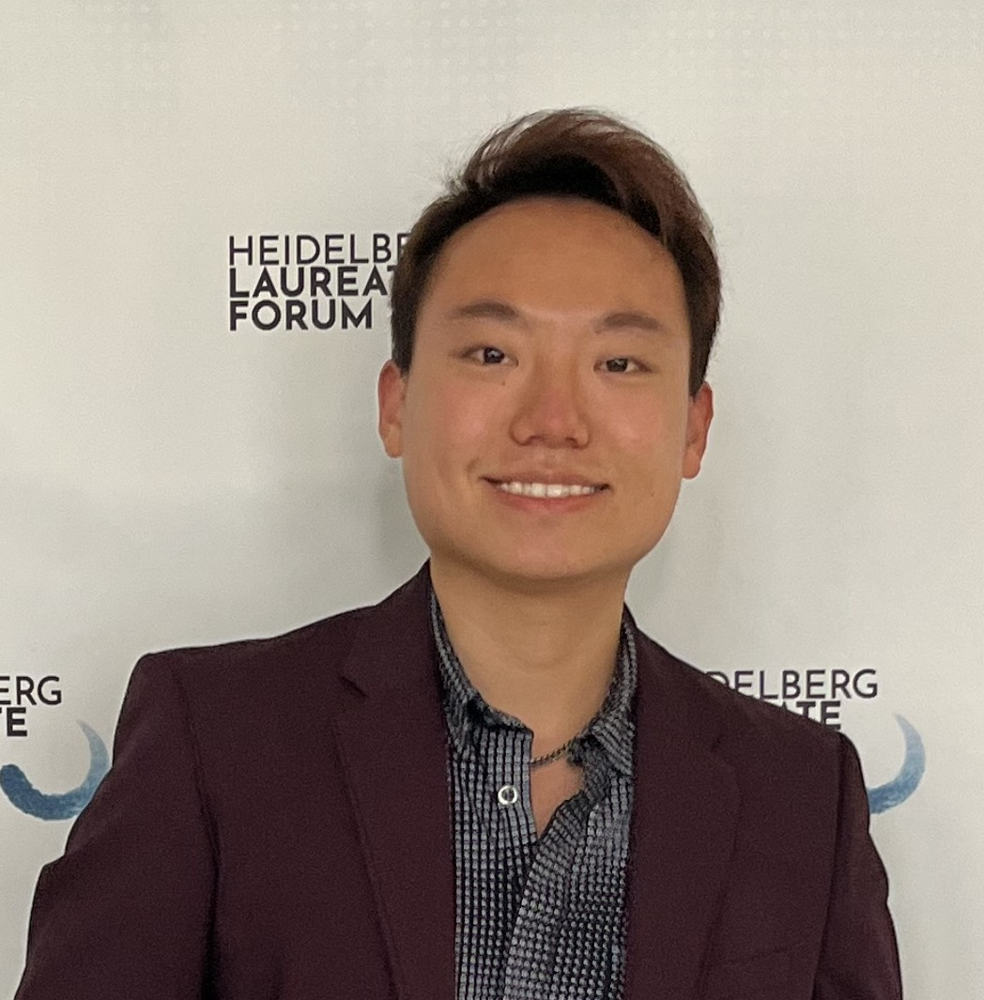
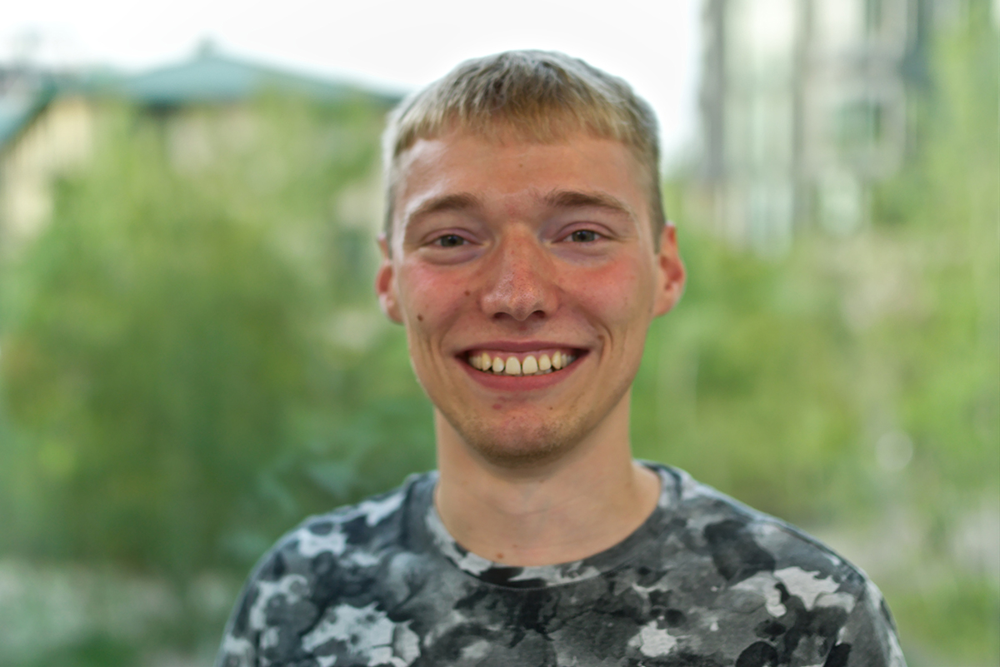
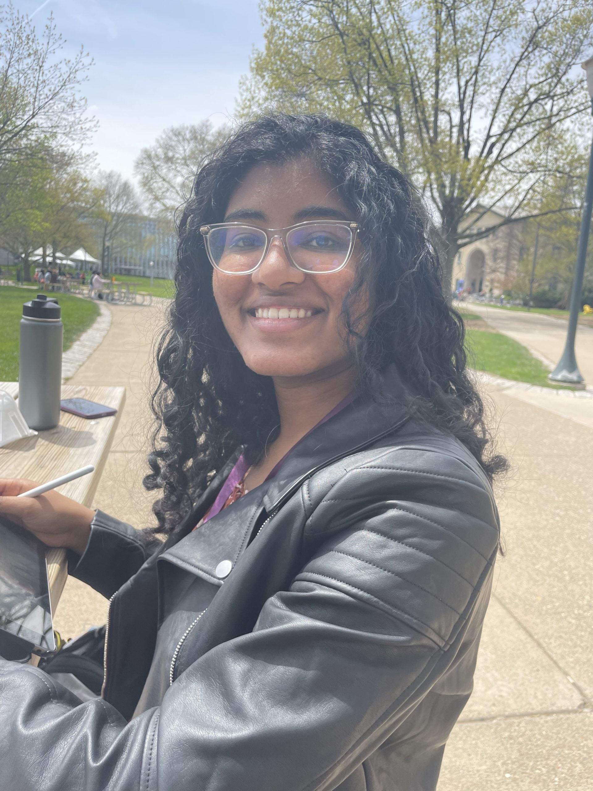

Faculty
Louis-Philippe Morency
Louis-Philippe Morency is Associate Professor in the Language Technology Institute at Carnegie Mellon University where he leads the Multimodal Communication and Machine Learning Laboratory (MultiComp Lab). He was formerly research faculty in the Computer Sciences Department at University of Southern California and received his Ph.D. degree from MIT Computer Science and Artificial Intelligence Laboratory. His research focuses on building the computational foundations to enable computers with the abilities to analyze, recognize and predict subtle human communicative behaviors during social interactions. He received diverse awards including AI’s 10 to Watch by IEEE Intelligent Systems, NetExplo Award in partnership with UNESCO and 10 best paper awards at IEEE and ACM conferences. His research was covered by media outlets such as Wall Street Journal, The Economist and NPR.
Postdocs
Ph.D Students
Gaoussou Youssouf Kebe
Youssouf Kebe is a PhD student at the Language Technologies Institute of the School of Computer Science at Carnegie Mellon University. His research focuses on modeling social interactions and exploring the influence of individual differences such as personality traits on social communication and behavior across various modalities such as visual, verbal, and vocal. Youssouf aims to build interactive agents that can interpret social cues in real-time and respond appropriately in personalized ways, with potential applications in mental health, education, and human-robot interaction. He obtained his M.S in Computer Science from the University of Maryland, Baltimore County, where he worked on mitigating bias in language grounding models under the guidance of Cynthia Matuszek, and completed his B.S in Computer Engineering at Bursa Technical University in Turkey.

Leena Mathur
Leena Mathur is a PhD student at CMU’s School of Computer Science in the Language Technologies Institute. Her work is supported by the National Science Foundation Graduate Research Fellowship. Her long-term research goal is to advance virtual and embodied AI systems that can perceive, understand, and respond to multimodal human communication during social interactions. Her research focuses on foundations of multimodal learning and artificial social intelligence, as well as real-world applications of multimodal AI to enhance human health and well-being. Leena completed her B.S. in Computer Science with engineering honors distinction in research, B.A. in Linguistics, and B.A. in Cognitive Science at the University of Southern California as a Goldwater Scholar, Astronaut Scholar, and CRA Outstanding Undergraduate Researcher Awardee. As an undergraduate, she worked with Maja Matarić and Khalil Iskarous at USC, Ralph Adolphs at Caltech, Michael Shindler at UC Irvine, and Rémi Lebret at the Ecole Polytechnique Fédérale de Lausanne.
Alex Wilf
Alex Wilf is a doctoral student in the Language Technologies Institute in the School of Computer Science. He is interested in multimodal representation learning, specifically for tasks involving how people express themselves – both when they are alone and in groups, and across both modalities and languages. He is currently interested in the promise of self-supervised learning and graph neural network architectures for use in designing novel multimodal networks. He completed his B.S. in Computer Science at the University of Michigan, where he worked with Emily Mower Provost on building robust and generalizable models for speech emotion recognition.
Martin Q. Ma
Martin Q. Ma is a Ph.D. student in the School of Computer Science at Carnegie Mellon University, advised by Louis-Philippe Morency. He also collaborates with Ruslan Salakhutdinov, Kun Zhang, and Yao-Hung Hubert Tsai. He graduated with a degree in mathematics and computer science from Brandeis University. His research focuses on developing new self-supervised learning methods based on neuroscience insights, understanding self-supervised learning with theoretical frameworks, and designing self-supervised algorithms for multimodal tasks. His works have been published in NeurIPS, CVPR, ICLR, EMNLP, and were acknowledged by a highlight in CVPR and an oral in NeurIPS Science meets Engineering of Deep Learning workshop.

Paul Pu Liang
Paul is Ph.D. student in the Machine Learning Department at CMU, advised by Louis-Philippe Morency and Ruslan Salakhutdinov. His long-term research goal is to build socially intelligent embodied agents with the ability to perceive and engage in multimodal human communication. As steps towards this goal, his research focuses on 1) the fundamentals of multimodal learning, specifically the representation, translation, fusion, and alignment of heterogeneous data sources, 2) human-centered language, vision, speech, robotics, and healthcare applications, as well as 3) the real-world deployment of socially intelligent agents by improving fairness, robustness, and interpretability in real-world applications. Previously, he received an M.S. in Machine Learning and a B.S. with University Honors in Computer Science from CMU
Victoria Lin
Victoria is a Ph.D. student in the Department of Statistics at Carnegie Mellon University. Her research interests include multimodal behavior analysis, uncertainty quantification, causal inference for high-dimensional and complex longitudinal data, and applications in mental health and medical diagnostics. Prior to joining CMU, Victoria was a researcher with Miguel Hernán in the Program for Causal Inference at the Harvard School of Public Health. She received her M.S. in data science from CMU and her joint A.B. in statistics and in molecular and cellular biology from Harvard University.

Torsten Wörtwein
Torsten Wörtwein is a Ph.D. student in the Language Technologies Institute. His research interests include affective computing, integrating statistical methods in deep learning, multimodal behavior analysis, and healthcare analytics with a focus on symptoms of depression and psychotic disorders. He is currently focusing on emotion recognition and its technical challenges including uncertainty estimation and personalization. Previously, he worked on public speaking anxiety and public speaking performance assessment as well as on several computer vision projects. He received his B.Sc. and M.Sc. in Informatics from the Karlsruhe Institute of Technology in Germany and a M.Sc. in Language Technologies from Carnegie Mellon University.
Alexandria Vail
Alexandria K. Vail is a Ph.D. student in Human-Computer Interaction. Her research interests include user modeling, affective computing, and multimodal behavior analysis, particularly within the context of healthcare and clinical decision support technologies. Her work recently received the Best Paper Award at the International Conference on User Modelling, Adaptation, and Personalization; this work has also been recognized with distinction at the International Conference on Intelligent Tutoring Systems and the International Conference on Educational Data Mining. Before joining CMU, she received the B.S. degree in Computer Science and the B.S. degree in Mathematics from North Carolina State University, with minor concentrations in Cognitive Science and Physics.
Master Students
Santiago Benoit
Santiago Benoit is an MS student in LTI who previously majored in Artificial Intelligence at Carnegie Mellon University. He is currently working on generative modeling of multimodal speech from text, encoderless stochastic variational inference, and temporal sequence modeling, especially applied to music generation. His research interests are in both theoretical and applied artificial intelligence. Some of his favorite subfields in AI include multimodal machine learning, generative modeling, and reinforcement learning.
Research Engineer
Visiting Scholar
Lab Manager
Staff
Graduate Research Assistants
Bhaavanaa Thumu
Bhaavanaa Thumu is a MS student pursuing a Master’s in Electrical and Computer Engineering. Her research interests include multimodal machine learning, video understanding, and multi-agent multimodal AI systems.
Nihal Jain
Nihal Jain is a Master’s in Machine Learning student at CMU. His research focuses on developing interpretability tools for analysis of multimodal machine learning models. He has previously worked on applications of deep learning in information retrieval when he was interning at Adobe Research. Before joining CMU, he obtained a B.E. in Computer Science at the Birla Institute of Technology & Science (BITS), Pilani, India.
Undergraduate Research Assistants

Sheryl Mathew
Sheryl Mathew is an undergraduate computer science student at CMU. She is interested in exploring interpretability in multimodal reasoning problems. She has worked on compiling and debiasing the Social-IQ 2.0 dataset.